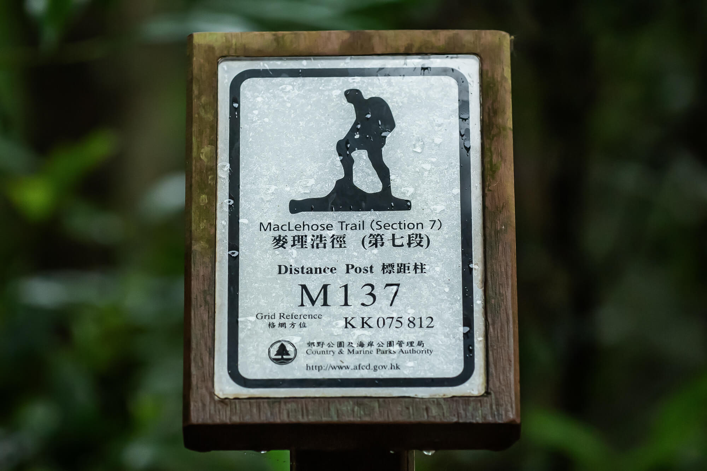

HKFT
HKFT

The MacLehose Trail is the longest hiking trail in Hong Kong, with a total length of 100 kilometers and 10 sections. The MacLehose Trail has a total of 200 distance markers, about one every 500 meters. The overall east-west direction starts from Pak Tam Chung in Sai Kung (the intersection of Tai Mong Tsai Road and Pak Tam Road, where the starting point of the trail is marked), runs through Sai Kung East, Sai Kung West, Ma On Shan, Lion Rock, Kam Shan, Shing Mun, Tai Mo Shan and Tai Lam Country Parks, and ends in Tuen Mun (under the light rail bridge crossing the intersection of Castle Peak Road and Pui To Road). Most of the trails are built along the mountain, and the scenery along the way is varied, with views of mountains, bays, reservoirs, etc.

Each section of the MacLehose Trail has different levels of difficulty. The trail is connected by mountain trails, stone steps, ancient trails, concrete trails and roads. Along the way, you can climb mountains, admire bays, swim in reservoirs, and walk on ancient trails. The scenery is varied and beautiful, and the signs are clear and sufficient. This is the most well-planned long-distance hiking trail in Hong Kong.
 Maclehose Trail Full Hiking Map
Maclehose Trail Full Hiking Map
| Maclehose Trail Road Section | Distance | Duration | Landscape |
| Trail one. Pak Tam Chung - Long Ke | 11 km | 3.5 hr | 3.5 |
| Trail two. Long Ke - Pak Tam Au | 14 km | 4.5 hr | 4 |
| Trail three. Pak Tam Au - Shui Long Wo | 9 km | 3.5 hr | 4 |
| Trail four. Shui Long Wo - Tate's Cairn | 13.5 km | 5 hr | 4 |
| Trail five. Tate's Cairn - Tai Po Road | 11 km | 3.5 hr | 2.5 |
| Trail six. Tai Po Road - Shing Mun Reservoir | 4 km | 1.5 hr | 2.5 |
| Trail seven. Shing Mun Reservoir - Lead Mine Pass | 7 km | 3.5 hr | 3.5 |
| Trail eight. Lead Mine Pass - Route Twisk | 9.5 km | 3.5 hr | 3.5 |
| Trail night. Route Twisk - Tin Fu Tsai | 6 km | 1.5 hr | 1 |
| Trail ten. Tin Fu Tsai - Tuen Mun | 15.5 km | 5 hr | 2 |